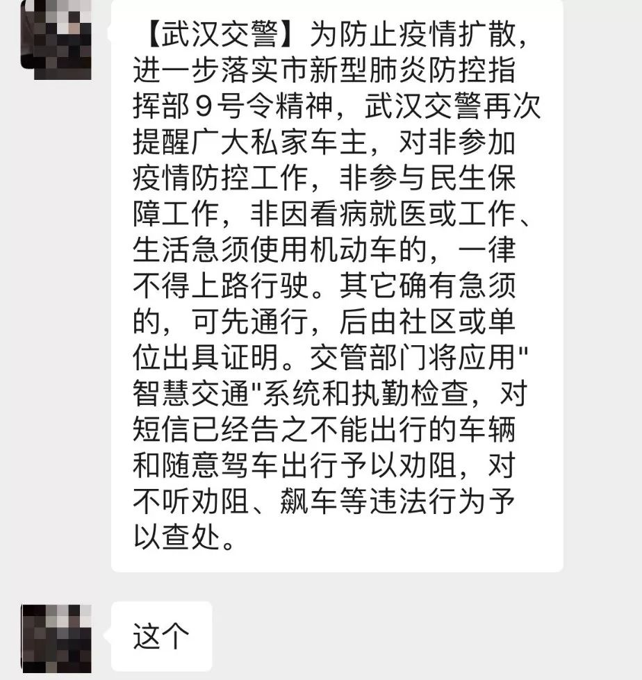
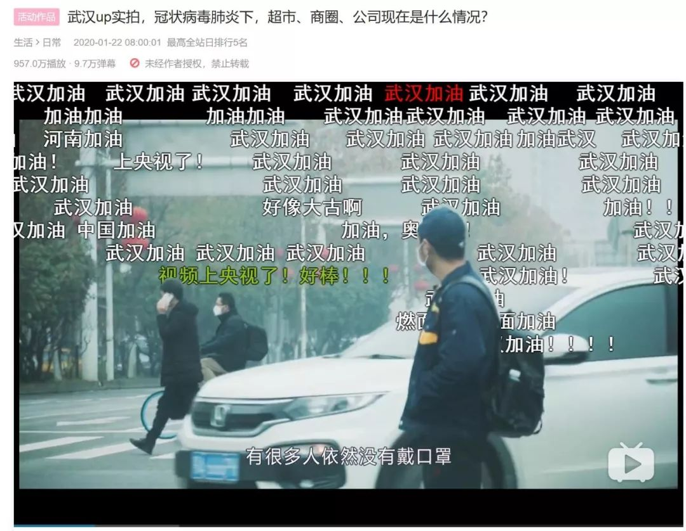
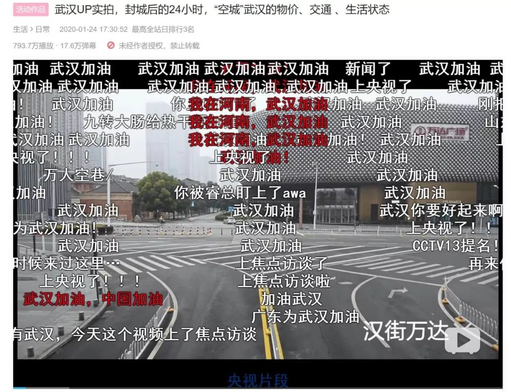
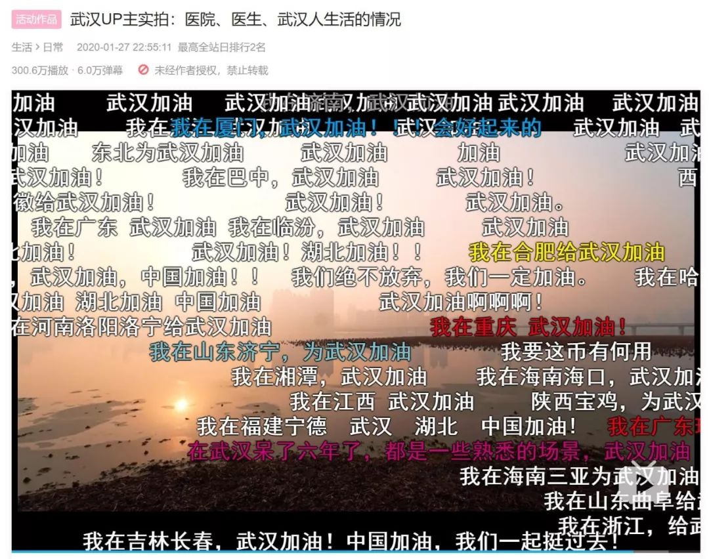
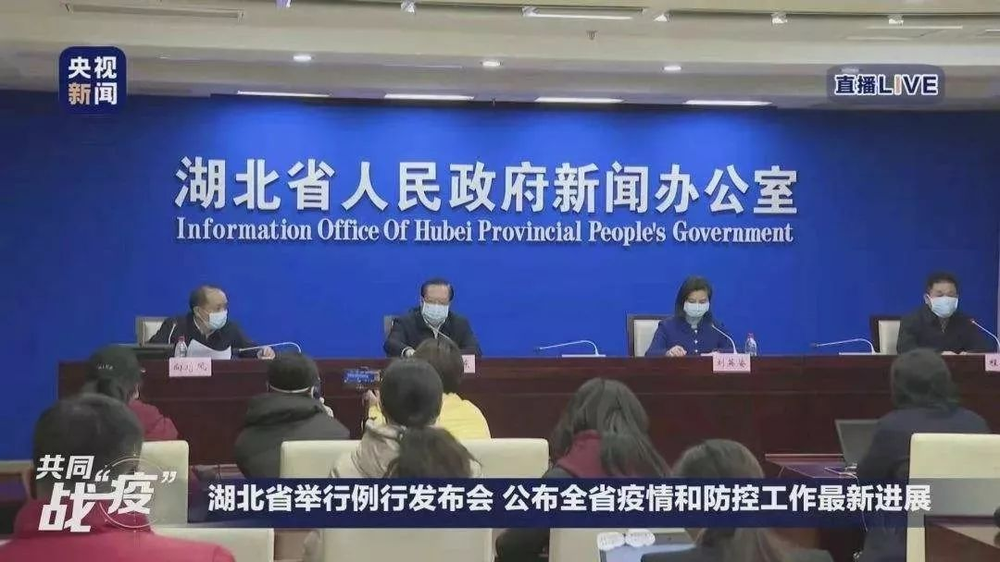

武汉人在琼粤两地的“特殊待遇”
原文链接 备份链接 27.01.2020本文字数：2907，阅读时长大约5分钟 导读：此次肺炎病毒毒性没有非典强但是传播力特别强，所以要想尽早恢复平安就要听从政府安排。 作者 | 第一财经 林春挺 李溯婉 每年春节前后，有许多外省车主自 …

我希望是能从个人角度，发掘一些不一样的故事。
文 | 应 琛
1月29日，大年初五，这一天本是中国人烧香拜财神的吉日。往年，在武汉归元寺，纷至沓来的祈福人群让这里香火缭绕，成为武汉过年的盛景之一。如今，一切落入寂静。
当天，是武汉“封城”后的第七天。下午，林晨开着车出门拍了一些视频素材，又去家附近的超市买菜，而这是“封城”后，他第二次出门买菜。
也就是在这天下午，林晨收到了武汉交警的短信，武汉对私家车进行管制，之后他可能没办法开车出门。

30岁的林晨，是一名B站的UP主，网名“林晨同学”。近日，他在B站个人账号上相继推送三则疫情下的武汉现状视频，用镜头记录下武汉的“封城日记”。令他没有想到的是，视频相继被人民日报、环球时报等媒体转发，从而火爆全网。
截至记者发稿，单在B站一个平台，三则视频的播放量已突破2000万。在留言区，记者看到，回荡最多的，是全国各地人民为武汉加油的声音。
“封城”是一个重要节点
作为一名以Vlog为主的UP主，在做这次肺炎疫情的视频之前，林晨发布的视频大多以生活类为主。每次他都会事先策划一个主题，并以事件的形式呈现。
林晨说，最早听说有不明原因的肺炎患者，大概是在1月20号之前，“最先是我身边的朋友告诉我有肺炎，让我出门要注意，尽量少去人多的地方。但事实上，大家当时并没有真的很在意。又过了两天，看到是说得肺炎的人变多了，当时我基本上就不去人多的地方了，出门吃东西也是吃完赶紧走，都也会戴口罩”。
但林晨坦言，据他观察，当时有很多中年人或老年人，并不在意这个事情，“他们会觉得不就是个肺炎吗？或者是因为有限的信息渠道让他们觉得这个事还没有到一个更严重的状态”。

再过了一天，也就是1月21日，林晨觉得好像事情变严重了。这天，他如往常一样出门采买一些生活必需品，并决定用手机镜头记录在新冠肺炎发生时，武汉人真实的生活，如超市、商圈、公司到底是什么情况。
拍摄过程中，他发现，尽管网络上已有不少关于疫情严重性和紧迫性的消息，街上仍有一半左右的人未戴口罩，其中，大部分是中老年人，“但当天我们年轻人其实已经都开始去抢口罩了，很多地方都卖完了”。
林晨说，他希望通过这个实拍视频，提醒大家提高警惕，并提醒身边的人一定要戴上口罩。翌日，林晨在B站个人账号上推出了该Vlog，截至发稿时，该视频播放量已达950余万。
随着疫情的发展，林晨觉得可以为这次疫情专门做一期视频，“之前拍素材都是挺‘顺便’的，但拍完之后发现其实可以做得更完整一些。于是，就有了这次比较受关注的武汉‘封城’当天的视频”。

是的，1月23日，腊月二十九，对武汉来说是将被载入史册的一天：为应对新型冠状病毒的肆虐，当天，武汉市新型肺炎防控指挥部发出指令：全市城市公交、地铁、轮渡、长途客运暂停运营；无特殊原因，市民不要离开武汉，机场、火车站离汉通道暂时关闭。此后，有着1100万人口的武汉进入“封城”时间。
“封城当天是这次疫情比较大的一个时间节点。“林晨告诉记者，在保证安全的前提下，他决定上街再拍一些素材。
当天早上，他和女友先是前往超市买菜，因为就在前一晚他和父母通了电话，决定今年不回老家过年，“当时，我们听到的消息是菜都卖完了，得赶紧去抢一点回来囤起来。”好在超市货源还算充足，只是有同样想法的人很多，进出超市都需要排很久的队。但这一次，林晨说，所有人都戴上了口罩。
而当林晨再次来到武汉最繁华的地方之一，他发现两天前还有三三两两行人的汉街已空无一人，店铺悉数关闭。
1月24日，大年三十这天，这则记录“封城”后24小时武汉生活、时长十分钟的Vlog上线。而片中的所有素材可以供全网使用。
“那些坚守在岗位的人，努力让这个城市维持正常运转，作为一名生活在武汉的（前）媒体人、视频创作者身处事件中，自己能做什么？我只想用自己的方式，努力做对的事，就和千万个武汉人正在做的事情一样。”当记者问他屡次冒险走上武汉街头拍摄视频的原因，林晨用平和的语气给出了答案。
人们最想了解医院的真实情况
这则Vlog，不仅让全国人民看到了疫情下真实的武汉，也让林晨在几天里收获了十余万粉丝。
视频下，记者看到，大多数的留言都在说“武汉加油”。也有人给林晨发私信，一些人说他们需要帮助，一些人称自己是志愿者可以提供帮助，还有一些人留言叙述自己的故事。
“但很多人最关心的事情，其实是武汉现在医院的情况是什么样？因为这段时间有挺多人在传武汉医院的情况是特别恐怖那种。”林晨坦言，他也不知道究竟怎样，“因为我们大部分当地人其实都是在家里的，没什么事也不会出去，所以我们得到的信息跟你们其实没有什么差别，也不会有人专门告诉我们怎么样。但听身边朋友或者身边得病的人讲，医院现在确实是一个人满为患的状态，床位非常紧缺。我自己的感觉是，如果症状稍微轻一点的，基本上都是自己在家里先隔离一下。”
于是，林晨只能尽可能地去求证。他去航拍了一段某定点医院的素材，同时又去联系了武汉本地的志愿者，除了让他们提供一线的素材外，也通过采访让志愿者来讲述一线的所见所闻。
此外，林晨又征集了一些武汉人当地的状况。

无人机拍摄
1月27日，他把这些融合到一起，上传了第三则视频。这个视频是和央视合作创作的。“大家想知道这个信息，我就把这个信息给做出来，就是这样一个简单的想法。虽然我目前只能通过一线的志愿者来口述还原。”但让林晨无奈的是，收获关注的同时，他也受到了一些质疑之声，“作为个人来做这个事情其实挺难的，有人说我是蹭热点，还有人说是发国难财，所以接下去要做什么内容，我还没有想好。我希望是能从个人角度，发掘一些不一样的故事”。
但有一点值得强调的是，在林晨看来，国家在这次抗击疫情的过程中，各项决策落实得已经很快了，包括“封城”这个决定，虽然是相当严重或者说损失会非常大的一件事情，但它还是很快就给落实下来，“我有时会想，如果这个事情发生在其他地方，会不会像我们电视剧里看到的那样，封城前可能先传谣言30天，然后真的‘封城’后有一些市民来闹事。但实际情况是，在武汉的人基本没有什么抱怨，我们每天在家里能不出去就不出去，然后基本的生活都能得到保障。只不过目前疫情确实有些严重，但我相信，一切都会过去”。

的确，正如林晨在片中所说，各地的物资和救援力量陆续到达。而他看到身边的人在做一些力所能及的事情——他们去拍了火神山，他们给医院送物资、送饭，他们接送医生上下班……
林晨说，病毒虽然给城市带来黑云，但这座城里的人都在拼命为它洗刷让它尽快痊愈，“即使城市封闭，我知道我们也不是一座孤岛，因为有几十亿人在关心着你。让我们一起，等待这座城市痊愈。到时候，欢迎你来武汉！”
周边城市疫情也需关注
现在，每天想到的时候，林晨就会给在湖北荆门的父母打电话问一下。据他了解，老家的家人目前也是自我隔离在家，能不出门就不出门，“比如说，我妈妈在监狱里面上班。她工作的监狱现在已经封监了。然后她们单位每天都会去我家门口喊她两声，如果人不在的话，单位的措施是不在我就扣你分，或者给记过什么的”。
林晨告诉记者： “其实湖北周边的那些城市情况也挺严重的。一方面他们生病的人也很多，然后医院的物资其实也非常紧缺。但大家现在都比较关注到武汉这边，周边这些城市受到的关注相对少一些，得到的援助也会少一些。”
不过，这一情况已经得到了有关方面的高度关注。

1月29日晚上，湖北省召开新型冠状病毒感染肺炎疫情防控工作新闻发布会，通报全省疫情和防控工作最新进展情况。湖北省省长王晓东在发布会上表示，医疗物资保障很紧缺，不仅武汉及周边城市存在短缺，全省其他地方普遍严重不足。
当被问及湖北其他地市如何加强防控时，王晓东称，市、州的疫情防控当务之急就是加强重点地区、重点人员的防控，现在黄冈、孝感、荆门、咸宁等地的形势比较严峻，特别是黄冈，确诊和疑似病例累积超过1000人，“我们绝不能让黄冈成为第二个武汉。为此，省里已经决定派出工作组进驻黄冈，其他市州也派驻了督导组，坚持早发现、早诊断、早隔离、早治疗，才能为疫情的防控争取主动”。
征集令
“战疫”成败，匹夫有责。
《新民周刊》现面向全国征集新冠肺炎采访对象和真实故事：
如果你是参与抗击新冠肺炎疫情的医护人员或其家属，我们希望聆听你的“战役”故事，也希望传达你的诉求。
如果你是确诊、疑似患者本人或家属，我们希望了解你和家人如何“抗疫”的过程，让外界了解你的真实经历。
如果你是疫情严重地区的普通市民，我们希望展现你的乐观，并倾听你所需的帮助。
如果你是公共服务人员或各类捐助者，我们希望看到你的“最美逆行”，记录下你的无私。
……
抗击新冠肺炎疫情，我们诚征对疫情了解的社会各界人士，提供相关线索，说出你的故事，让我们用新闻留存这一切。
《新民周刊》新冠肺炎线索征集值班编辑联系方式（添加时请简要自我介绍）：
周一：应 琛 微信号：paulineying0127
周二：金 姬 微信号：gepetta
周三：黄 祺 微信号：wxid_bf5mudid7oz322
周四：周 洁 微信号：asyouasyou
周五：孔冰欣 微信号：kbx875055141
周六：吴 雪 微信号：shyshine1105
周日：姜浩峰 微信号：jianggeladandong
新闻是历史的底稿，你们是历史的见证者。期待你的故事、你的线索！

▼
大家还都在看这些
▼
转载请在评论区留言，获得授权！
转载时，须注明作者、出处和微信号


原文链接 备份链接 27.01.2020本文字数：2907，阅读时长大约5分钟 导读：此次肺炎病毒毒性没有非典强但是传播力特别强，所以要想尽早恢复平安就要听从政府安排。 作者 | 第一财经 林春挺 李溯婉 每年春节前后，有许多外省车主自 …
原文链接 备份链接 【财新网】（记者 张帆）1月24日中午12点左右，作为疫情爆发中心地的湖北省姗姗启动重大突发公共卫生事件一级响应。而在此之前，从1月23日起，已有浙江、广东、湖南、北京、上海、天津、安徽、重庆、四川等多个省份启动一级 …
原文链接 备份链接 作者 | 第一财经 一财资讯 来源 | 新华社 人民日报 央视新闻 中国新闻网 据人民日报，29日晚，湖北省召开第8场新型冠状病毒感染的肺炎疫情防控工作新闻发布会。湖北省委副书记、省长、省新型肺炎防控指挥部指挥长王晓 …
原文链接 备份链接 【财新网】（记者 丁捷 综合）新型冠状病毒肺炎感染人数快速上升。根据国家卫健委数据，截至1月29日24时，中国累计报告确诊病例7711例，过去一天新增1737例确诊病例，西藏已出现首例确诊病例。新增死亡38例，新增疑 …
原文链接 备份链接 1月29日下午，北京市委办、市政府办联合发文，提出本市出现多起聚集性病例（一家人里有几人发病）、没有湖北接触史的本地病例、以及发现隐性感染者和低龄感染者，波及范围可能越来越广。这些迹象都意味着“北京疫情出现由输入期转入 …